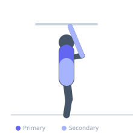
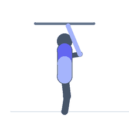

Exercise guide / Passive Hanging — Scapular Decompression
Passive Hanging — Scapular Decompression
Passive hanging involves gripping an overhead bar and allowing the bodyweight to fully decompress the shoulder girdle and spinal column. Unlike active hanging (where the scapulae are actively depressed), passive hanging allows the shoulder blades to elevate fully under the body's weight. This creates traction through the shoulder joint, stretches the latissimus dorsi and teres major, and gently decompresses the intervertebral discs of the thoracic and lumbar spine. Regular passive hanging is used in spinal decompression and shoulder mobility rehabilitation.
Primary muscles
latissimus dorsi
trapezius upper
Secondary muscles
flexor carpi radialis
erector spinae
Equipment
Pull-Up Bar (Doorframe)
Optional
Pull-Up Bar (Freestanding Tower)
Pull-Up Bar (Wall-Mounted)


Starting position
- Grip an overhead pull-up bar or gymnastics rings with both hands shoulder-width apart. Use an overhand or mixed grip. Begin with feet off the floor if possible, or allow a slight bend in the knees if the bar is low.
Setup
- Ensure the bar or hanging point is structurally sound and can support the full bodyweight. Use chalk or straps if grip strength is a limiting factor rather than the therapeutic goal.
Steps
- Step 1: Grip the bar and allow the body to hang freely, letting the shoulder blades rise and the weight fully load through the grip.
- Step 2: Breathe deeply throughout the hang, allowing the chest and thoracic spine to expand and release on each exhale.
- Step 3: Hold the passive hang for the target duration — beginning at 10-15 seconds and progressively increasing to 60+ seconds.
- Step 4: Lower to the floor or step down from the hang under control. Rest and repeat.
Coaching cues
- Let the shoulders rise — this is passive, not a lat pulldown
- Breathe into the chest and feel the spine lengthen with each exhale
- Relax the hands as much as possible while still maintaining grip
Breathing
- Deep, slow breathing throughout. Exhale completely to allow the thoracic cage to relax and decompress with each breath.
Range of motion
- Full passive elevation of the scapulae is the target. The body should feel fully decompressed and elongated.
Tempo
- Hold for 15-60 seconds per set. Build duration progressively over weeks.
Common mistakes
- Actively depressing the scapulae during what should be a passive hang — allow the shoulder blades to rise naturally
- Gripping so tightly that the forearm tension prevents shoulder relaxation
- Hanging for too long initially — build duration progressively to avoid elbow flexor soreness
Safety
- If you have a diagnosed shoulder subluxation or instability, check with a physiotherapist before passive hanging
- Avoid if wrist or elbow pain occurs during the hang
- Build hang duration gradually — beginning at 10-15 seconds and working toward 60 seconds over several weeks
Training
- endurance: 1–5 reps
- mobility: 1–5 reps
- endurance: 2–4 sets
- mobility: 2–4 sets
- Rest: {'endurance': 60, 'mobility': 60}